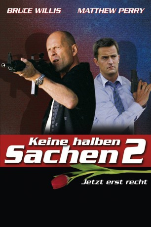

gesehen am 17.10.2016
gesehen am 17.10.2016Alternativ: The Whole Ten Yards gesehen am 17.10.2016
 
 IMDB-Wertung: 5.5 / 10
IMDB-Wertung: 5.5 / 10  Metascore:
Metascore: 
Frieden ist eingekehrt im Haus von Ex-Mafioso Jimmy "Die Tulpe" Tudeski (Bruce Willis). Seit er mit Jill (Amanda Peet) verheiratet ist, kümmert er sich ausschließlich um den Haushalt, während Jill in der Ausbildung zur perfekten Killerin ist. Doch die Ruhe hält nicht lang: Oz (Matthew Perry), der Jimmys Tarnexistenz abgesichert hatte, steht vor seiner Tür und bittet um Hilfe, da seine Cynthia (Natasha Henstridge) von einer ungarischen Gangsterbande entführt wurde. Und Jimmy wird mit hineingezogen, denn geführt werden die Gegner von Laszlo Gogolak (Kevin Pollak), dem Vater seines Gegners aus dem ersten Teil ...
Jahr: 2004
Dauer: 98 Minuten
FSK: 12
Land: USA Studio: Warner Bros.Tonspuren: DD5.1 - ,
Untertitel:
Auflösung: 1080p (1920x1080) Größe: 6246 MB
Genre: Komödie, Krimi, Thriller
Regisseur: Howard Deutch
Drehbuch: Mitchell Kapner, Mitchell Kapner, George Gallo
Soundtrack: John Debney
Darsteller:
 Bruce Willis als Jimmy
Bruce Willis als Jimmy Kevin Pollak als Lazlo
Kevin Pollak als LazloDatei: X:\2-Dilogie(G-M)\Keine halben Sachen\Keine halben Sachen 2 - Jetzt erst recht! (2004, FSK12, 1920x1080).mkv seit 05.03.2015
Festplatte: HD Collection-2(A-Z)-3(A-M)
 Alle Filme aus Gruppe '2-Dilogie(G-M)\Keine halben Sachen'
Alle Filme aus Gruppe '2-Dilogie(G-M)\Keine halben Sachen'